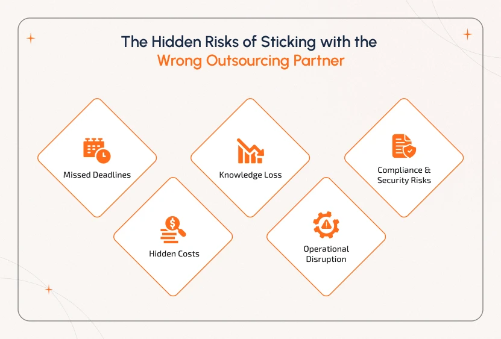
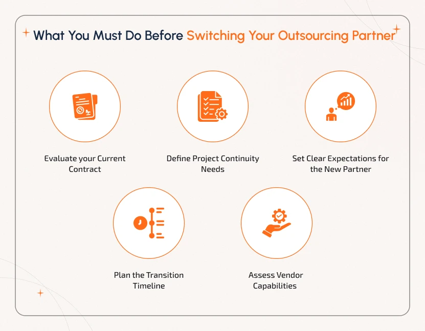
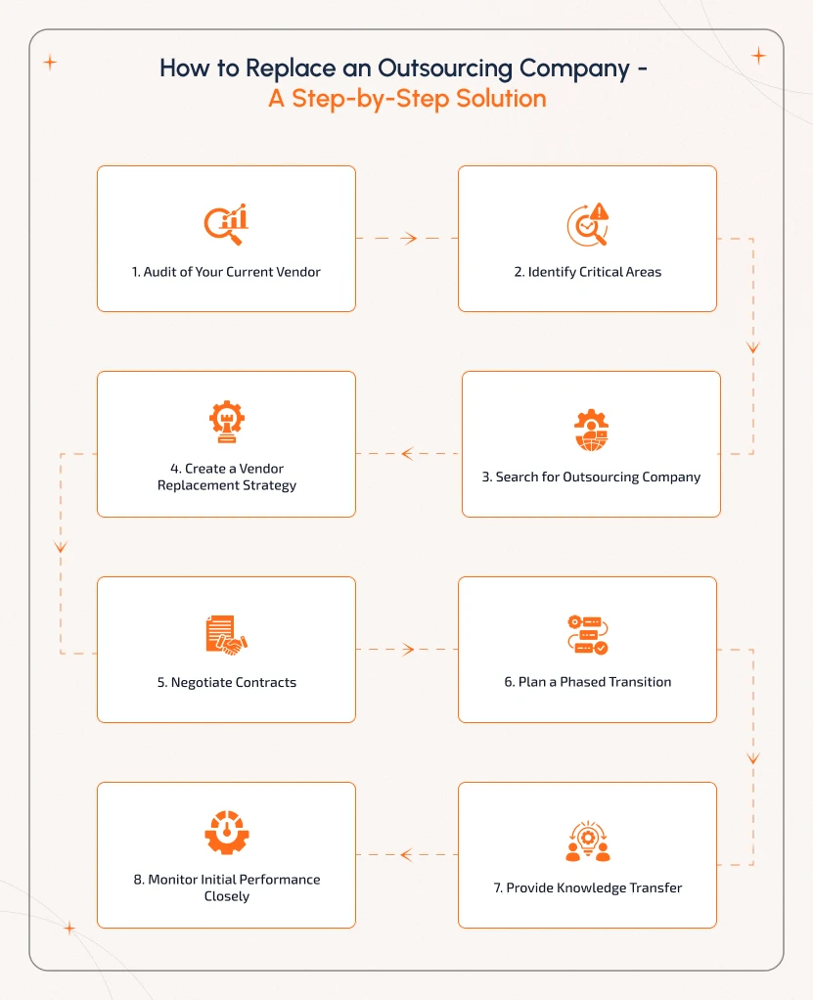
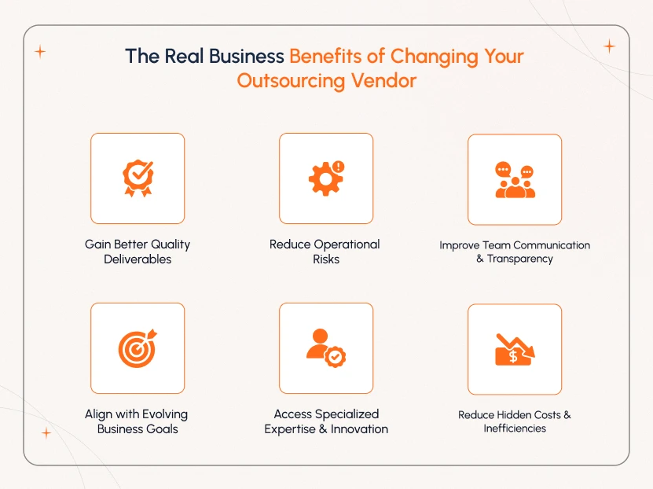
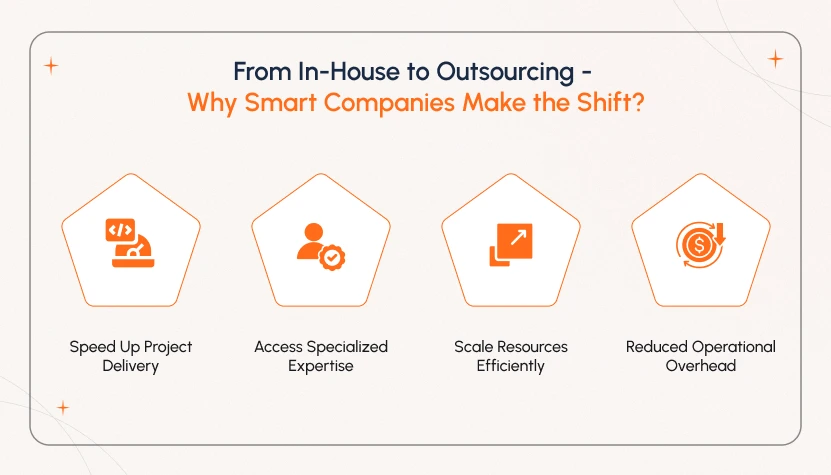
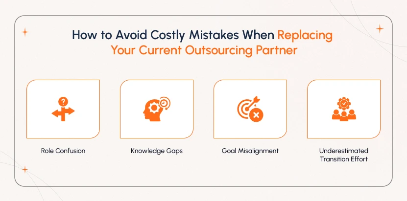

Are you a business owner or project manager struggling with an outsourcing partner that no longer meets your expectations? If so, it might be time to replace the outsourcing company for all the right reasons. Failing to act at the right time means you are eventually risking your growth, budget, and business reputation. When deadlines are missed, communication breaks down, and quality becomes inconsistent, it is no longer just an operational flow; but it is a strategic threat that demands immediate action.
Knowing when and how to replace an underperforming outsourcing provider protects your productivity, project timelines, and profitability. This guide will walk you through accessing the warning signs to planning the exit, and selecting a new outsourcing firm. Learn how to regain control, maintain business continuity, and rebuild your outsourcing strategy for long-term performance and scalability.
The Hidden Risks of Sticking with the Wrong Outsourcing Partner
Continuing to work with an underperforming software outsourcing partner is not just a problem; rather, it brings serious, long-term consequences for your business. It is vital for leaders to understand these risks in detail to make informed decisions before damage occurs.

1. Missed Deadlines
When an outsourcing partner doesn't
have proper management, accountability, or resource planning, the result is missed
deadlines. Even small delays can emerge and affect product launches, marketing
campaigns, & customer commitments. Over time, missed deadlines affect the client's
trust and even frustrate internal teams.
2. Hidden Costs
When the work quality is poor, it often
leads to repeated revisions, bug fixes, and even requires a project restart. All
these add up to hidden costs and can inflate your original budget and divert
resources from making strategic initiatives. While the outsourcing contract looks
affordable upfront, it will turn into a costly mistake when inefficiencies start
adding up.
3. Knowledge Loss
If your vendor controls all your
important processes, documents, and tools, then your business becomes dependent on
them. When the vendor underperforms or suddenly leaves, your team will find it hard
to continue working. As a result, delays happen and knowledge gaps appear.
4. Operational Disruption
There is a high possibility for
an underperforming outsourcing partner to bring in bottlenecks across internal
workflows. Thus, teams waiting for deliverables may face downtime, their internal
dependencies may get blocked, and the day-to-day operations may become slow. This is
termed as ripple effect, and it affects the employees' productivity, customer
satisfaction, and overall business efficiency.
5. Compliance & Security Risks
Outsourcing partners,
especially those offshore teams, may handle the data and privacy differently. Data
breaches, legal issues, and damage to your company's reputation may occur due to
poor security or compliance. Even the simplest mistake can have the biggest
financial and operational consequences.
All of the above risks highlight why delaying the replacement of an underperforming outsourcing partner is crucial. A proactive strategy that covers evaluating performance, planning a vendor exit, and onboarding a reliable partner can protect operations, stabilize budgets, and ensure business continuity. Waiting for a longer time for outsourcing contract termination increases the complexity, cost, and risk of transition.
7 Red Flags That Show It’s Time to Replace Your Outsourcing Company
Identifying any warning signs early can save your business from wasting time, spending unnecessary costs, and operational headaches. Here is what to watch for:
1. Consistent Missed Deadlines
If your outsourcing partner
fails to deliver work on time on a continuous basis, it can delay your projects,
affect client satisfaction, and disrupt the entire workflow. Repeated delays mean
that their processes or resources may not meet your needs.
2. Poor Communication & Reporting
Often, a lack of
transparent, delayed response, and vague updates will create confusion and
misalignment. Hence, effective communication is essential for managing expectations
and ensuring smooth project execution.
3. Low-Quality Output or Frequent Errors
Subpar
deliverables, recurring errors, or the need for constant rework imply that your
outsourcing partner is not maintaining acceptable standards. This increases the
costs and risks of reputational damage.
4. High Turnover Among the Vendor's Team
Frequent staff
changes within the vendor team will disrupt the knowledge continuity, slow down the
progress, and result in inconsistent output. For a long-term collaboration,
stability in the vendor's team is important.
5. Lack of Innovation or Adaptability
It is time to
change outsourcing partners if they fail to suggest improvements, adapt to changes,
or adopt new technologies. Without innovation and flexibility, it is possible for
your vendor to hold your projects and keep you from staying competitive.
6. Hidden Costs or Unexpected Fees
If the vendor regularly
adds unplanned charges or the final costs consistently exceed the estimation, it may
signal poor project management, a lack of transparency, and a misalignment of
incentives.
7. Failure to Align with Your Business Goals
When a vendor
doesn't understand or prioritize your strategic objectives, it can result in
deliverables that miss the mark. Alignment with your business vision is the key to
achieving meaningful results.
As a business, if you happen to see one or more of these issues, then it clearly shows that it is time to check for alternatives to outsourcing and consider replacing it with a new outsourcing partner. Acting proactively ensures your projects stay on track, your team remains productive, and your business goals are not compromised.
Time to Replace Your Outsourcing Company?
Don't let delays & errors slow your business. Look for better outsourcing options & make the switch smoothly.
What You Must Do Before Switching Your Outsourcing Partner
It is essential to plan carefully before replacing an outsourcing partner to ensure a smooth transition without disrupting your business. Before making the switch, it is vital to follow the critical steps given below.

1. Evaluate your Current Contract
The first thing to do before initiating any change is to review your existing agreement. You should also understand the termination clauses, notice periods, penalties, and options for renegotiation. This keeps you compliant with contractual obligations, and you can stay away from legal or financial issues at any time later.
2. Define Project Continuity Needs
It is essential to document all the workflows, processes, and assets. This covers everything from codebases to project files and documentation. With a clear roadmap, it is possible to make sure your new vendor can start the work effortlessly while minimizing the downtime and knowledge gaps.
3. Set Clear Expectations for the New Partner
Before you onboard a new outsourcing company, it is vital to define the deliverables, key performance indicators (KPIs), and milestones. The clear expectations reduce miscommunication, align the team with business goals, and provide measurable benchmarks for success.
4. Plan the Transition Timeline
It is vital to schedule the transition from one vendor to another carefully to avoid operational disruptions. By finding the critical dependencies, overlapping tasks, and potential risks, it is possible to ensure continuity during the handover.
5. Assess Vendor Capabilities
You shall choose a new outsourcing partner with proven experience in your industry and the specific skills your project requires. Besides, review case studies, references, and technical expertise to ensure they can deliver quality work.
The above steps are the foundation for a smooth, well-structured outsourcing transition. Careful planning not just minimizes the risks but also positions your business to reach higher efficiency, better quality, and stronger long-term results.
How to Replace an Outsourcing Company - A Step-by-Step Solution
Replacing an outsourcing partner can be frustrating. However, with a structured approach, the transition can be made smooth, minimize outsourcing risks, and maintain business continuity. Here is a step-by-step roadmap that guides you:

Step 1: Conduct a Through Audit of Your Current Vendor's Performance
Begin the process by evaluating your current outsourcing partner. Determine the project quality, adhere to deadlines, communicate effectively, and ensure overall reliability. This audit highlights the pain points and helps you understand what to prioritize in a new outsourcing partner.
Step 2: Identify Critical Areas Needing Immediate Attention
Pinpoint the processes, projects, or deliverables that are most affected by underperformance. By checking on the critical areas, you can ensure these get addressed as the first thing during the transition. This helps avoid operational disruptions.
Step 3: Search for Outsourcing Company Alternatives with a Strong Track Record
Now, you should start looking for vendors with proven expertise in your industry, positive client references, and relevant technical skills. A trusted and reliable partner with a history of successful projects will reduce the risks associated and speed up the onboarding process.
Step 4: Create a Vendor Replacement Strategy
You should develop a detailed plan that covers the deadlines, milestones, risk mitigation strategies, and responsibilities. With a clear roadmap, everyone will be able to know what needs to happen and when it should be done. This makes the transition predictable and manageable.
Step 5: Negotiate Contracts & Service-Level Agreements (SLAs)
This step is all about creating clear agreements with the new outsourcing partner by outlining deliverables, KPIs, timelines, and penalties for underperformance. With this, you can protect your business and set up expectations upfront.
Step 6: Plan a Phased Transition
Now, the process involves gradually handing over responsibilities to the new vendor instead of switching abruptly. The advantage of using phased transition is that it lets the team adapt, reduce operational risks, and maintain the ongoing projects without interruptions.
Step 7: Provide Knowledge Transfer & Training
This step involves ensuring all critical knowledge, documentation, and workflows are transferred to the new team. By providing training where needed, ensure they quickly become productive and aligned with your processes.
Step 8: Monitor Initial Performance Closely
The final step is to track the new outsourcing partner's performance against agreed KPIs and milestones. Regular monitoring allows you to identify issues at an early stage and hence make adjustments before they escalate.
By following the above structured roadmap, you can replace your outsourcing partner efficiently, maintain productivity, and set the stage for long-term success. A planned, phased approach involves very minimal risks while ensuring maximum continuity and quality in your operations.
Ready to Replace Your Outsourcing Company Smoothly?
Follow a proven roadmap to keep your projects running smoothly.
Real-World Examples of Successful Outsourcing Transitions
We could find that many organizations have successfully replaced underperforming outsourcing partners and achieved stronger business outcomes with the help of strategic transitions.
1. Global E-Commerce Platform
A leading e-commerce enterprise switched from a struggling offshore vendor to a new outsourcing partner with a more agile and collaborative model. This resulted in reducing project delays by 40% while improving code quality and accelerating release cycles without disrupting everyday operations.
2. Fintech Startup
A fintech company has executed a carefully planned transition from its legacy IT outsourcing provider. With strategic planning and seamless handover, they ensure product launch schedules, improve system reliability, and ensure zero downtime during migration.
3. Additional Industry Insights
Beyond these, there are many other businesses across technology, healthcare, and SaaS sectors that have benefited by replacing an outsourcing partner. Studies show that with a well-planned vendor replacement strategy, companies can not just overcome outsourcing failures but also unlock higher productivity and innovation.
The Real Business Benefits of Changing Your Outsourcing Vendor
Switching to a new outsourcing partner is not just about fixing what's broken. It is about unlocking better results, reducing risks, and driving growth. Here is why many businesses choose to make the change:

1. Gain Better Quality Deliverables
One of the non-negotiable qualities among the outsourcing partner is the consistent quality. A reliable outsourcing partner ensures to deliver reliable, high-standard work that aligns with your expectations. Thus helping you meet the deadlines and maintain the brand reputation.
2. Reduce Operational Risks
If your current vendor lacks structure or accountability, project delays and compliance issues occur. A dependable partner helps in minimizing these risks through transparent processes, proper documentation, and proactive management.
3. Improve Team Communication & Transparency
With strong communication, trust starts building. A new outsourcing partner with established reporting systems and collaborative tools ensures everyone stays aligned while reducing miscommunication and unnecessary confusion.
4. Align with Evolving Business Goals
As your business grows, your outsourcing strategy should also grow with it. Replacing a non-beneficial vendor with one who understands your long-term objectives ensures your operations remain fast and strategically aligned
5. Access Specialized Expertise & Innovation
With the outdated skill sets, the progress possibilities are limited. By partnering with a vendor who has experience in the latest technologies and methodologies, you will gain access to specialized talent, innovation, and faster problem-solving.
6. Reduce Hidden Costs & Inefficiencies
Frequent rework, mismanagement, and unclear billing lead to hidden costs. A new outsourcing partner with strong governance practices will help optimize budgets and limit inefficiencies.
Having a clear business case for changing the outsourcing vendor is all the way helpful by justifying the transition to both internal teams and stakeholders. With the right outsourcing partner, you will not just be able to fix the current challenges but also set a stronger foundation for scalable and long-term success.
From In-House to Outsourcing - Why Smart Companies Make the Shift?
There are companies that still rely on in-house teams primarily and for them, the outsourcing agencies offer the powerful opportunity to scale faster and operate more efficiently. Upon partnering with the right outsourcing company, it is possible to achieve the following things:

1. Speed Up Project Delivery
By relying on external teams, it is possible to shorten the development cycles and this speeds up the time-to-market.
2. Access Specialized Expertise
You will get in touch with global talent with skills that your internal team may not possess. This includes niche technologies to advanced project management.
3. Scale Resources Efficiently
It is possible to adjust the team size and capability on demand without the long-term overhead of hiring and training full-time staff.
4.Reduced Operational Overhead
It is possible to maintain lower costs related to infrastructure, salaries, and benefits while maintaining high-quality output.
Businesses can take all of the above advantages upon choosing the right outsourcing partner. Choosing the wrong one leads to missed deadlines, poor communication, and inflated costs. That's why understanding how to replace an underperforming outsourcing provider is important, as is deciding to outsource in the first place.
Ready to Scale Smarter with Outsourcing?
Get faster delivery, expert skills, and flexible resources with Sparkout as your outsourcing partner.
How to Avoid Costly Mistakes When Replacing Your Current Outsourcing Partner
Even after careful planning, there is a possibility of going off track during vendor replacement when the common pitfalls are not addressed at an early stage.

1. Role Confusion
If the outgoing and incoming vendors have overlapping roles, it can create confusion, miscommunication, and delays in project progress.
2. Knowledge Gaps
When the handovers are rushed, there is a high possibility of losing context, documentation, and technical insights that are critical for project continuity.
3. Goal Misalignment
Without clearly defined KPIs and shared objectives, the new partner may struggle to deliver the expected outcomes.
4. Underestimated Transition Effort
Most of the team overlooks the time, cost, and management bandwidth required for a smooth vendor switch.
Upon anticipating these challenges, it is possible to build a more effective transition plan. i.e., that maintains continuity, protects project knowledge, and ensures a successful partnership from the very beginning.
How to Maximize ROI With Your New Outsourcing Partner
Replacing an outsourcing vendor is a strategic opportunity that boosts efficiency, innovation, and business growth. A reliable partner can help you:
Optimize Workflows - Streamline the processes and eliminate operational inefficiencies to save time and resources.
Leverage Modern Technologies - They use the best practices and advanced tools that speed up the project delivery and improve the quality.
Enhance Collaboration - By establishing clear communication channels, the new outsourcing partner will ensure alignment across teams and projects.
Track Performance with KPIs - They set measurable goals from the start and monitor progress, results, and ROI.
By choosing the right outsourcing partner, your transition becomes more than a replacement. In other words, it offers the strategic advantage that drives long-term value and performance.
How Sparkout Helps You Replace Your Outsourcing Company Seamlessly
By partnering with Sparkout to replace your outsourcing company, you will experience a smooth outsourcing transition that is structured and risk-free. Our experts follow a proven approach to help businesses switch vendors without losing momentum or compromising quality.
- We leverage a custom transition roadmap that minimizes the disruption and maintains workflow continuity.
- With our strategic vendor replacement, our team connects you with outsourcing partners that align with your business goals and culture.
- From audits to onboarding, we manage every phase to ensure your new team delivers measurable ROI from the beginning.
- With our offshore team transition management, we handle knowledge transfer, documentation, and process alignment to ensure seamless handover.
- We identify potential risks at the early stage and deploy preventive strategies to safeguard timelines, data security, and project quality.
With all these ways, we help you upgrade to a more efficient, transparent, and performance-driven partnership.
Why Global Businesses Trust Sparkout to Replace Their Outsourcing Company
We ensure every transition is like a partnership and not a project. Our approach includes structured execution with transparent communication.
Discovery & Diagnosis - We assess where your current outsourcing model needs improvements and define what a successful, future-ready partnership looks like.
Transition Blueprint - A detailed roadmap that defines handover milestones, risk controls, and operational benchmarks.
Seamless Implementation - Our team connects directly with your internal stakeholders and the outgoing vendor to ensure zero downtime.
Post-Transition Optimization - We continuously measure outcomes and ensure you get consistent value beyond the initial switch.
At Sparkout, we not only promise you smooth transitions but also deliver client satisfaction. We are trusted by clients because:
- We handle every outsourcing change with speed, precision, and discretion.
- We take full accountability from start to end, without knowledge loss and downtime.
- We believe in transparent communication, measurable progress, and lasting relationships.
Trust Sparkout to Replace Your Outsourcing Company
At Sparkout, every transition is handled with precision, zero downtime, and full accountability to ensure your business stays on track.
Are You Ready to Replace Your Outsourcing Company & Reclaim Control?
Replacing your outsourcing company can be a turning point for your business growth. By identifying the warning signs early, you can evaluate your options carefully and plan the transition strategically. This in turn, minimizes the disruption and maximizes the value.
At Sparkout, we help businesses turn vendor challenges into opportunities for growth. Our structured transition process ensures continuity, reduces risks, and sets the stage for improved quality, ROI, and communication.